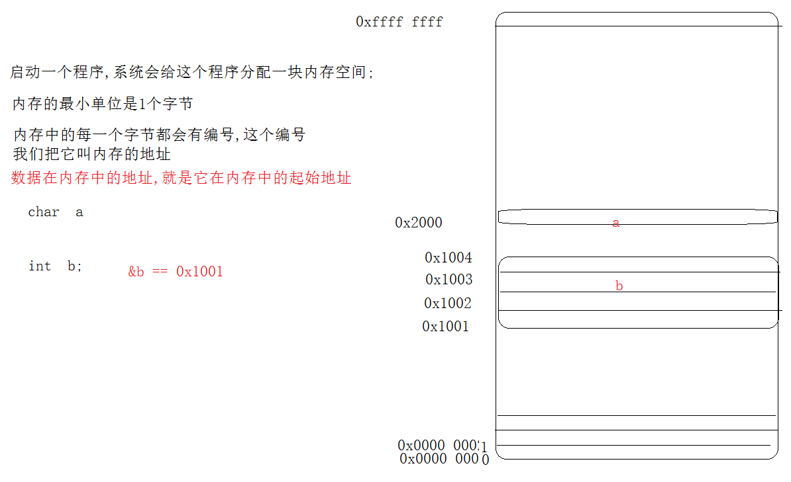

1 数据在内存的地址

2 数组的地址和数组名
int a[10]
数组名a ,等价于第0个元素的地址(首元素地址)
数组名是常量,不能被赋值
&a[0] 第0个元素的地址
&a 整个数组地址

int main()
{
int a[5];
printf("%u\n",&a[0]);
printf("%u\n", a);
printf("%u\n", &a);
printf("%u\n", &a[0]+1);
printf("%u\n", a+1);
printf("%u\n", &a+1);
system("pause");
return 0;
}
3 数组的练习
//数组的逆置
int main()
{
int a[10] = { 1,2,3,4,5,6,7,8,9,10};
int i = 0;
int j = sizeof(a) / sizeof(a[0]) - 1;
int tmp = 0;
while (i<j)
{
//前后交换
tmp = a[i];
a[i] = a[j];
a[j] = tmp;
//移动位置
i++;
j--;
}
system("pause");
return 0;
}
//求数组最大值
int main02()
{
int a[10] = {2,5,1,67,34,67,34,56,2,3};
int max = a[0];//2
for (int i = 1; i < 10; i++)
{
if (max < a[i])
max = a[i];
}
printf("%d\n",max);
system("pause");
return 0;
}
4 冒泡排序

代码:
//数组的排序 - 冒泡排序
int main()
{
int a[5] = {2,5,6,3,-1};
int n = sizeof(a) / sizeof(a[0]);
for (int i = 0; i < n - 1; i++)//比较的轮数
{
//因为每次比较的次数都要减1,刚好i每次加1,所以每一轮 比较的次数是n-1-i
for (int j = 0; j < n-1-i;j++ )//每一轮需要比较的次数
{
if (a[j] > a[j + 1])//如果前面的元素比后面的元素大,则交换位置
{
int tmp = a[j + 1];
a[j + 1] = a[j];
a[j] = tmp;
}
}
}
for (int i = 0; i < n; i++)
{
printf("%d ",a[i]);
}
printf("\n");
system("pause");
return 0;
}
5 二维数组
二维数组就是有多个一维数组

6 二维数组的定义
int main()
{
int a[3][4];//定义一个3行4列的二维数组,
//二维数组的每一个元素也是一个 变量
a[1][1] = 10;
a[2][3] = 20;
for (int i = 0; i < 3; i++)
{
for (int j = 0; j < 4; j++)
{
printf("%d ",a[i][j]);
}
printf("\n");
}
system("pause");
return 0;
}
7 二维数组的初始化
int main()
{
//给二维数组部分元素初始化,其他元素为0
//int a[3][4] = { {1,2,3,4},{5,6,7,8},{9,10,11,12} };
//int a[3][4] = { 1,2,3,4 , 5,6,7,8 , 9,10,11,12 };
//int a[3][4] = {1,2,3};
//二维数组定义时,不能省略列的下标,可以省略行的下标
int a[][3] = { 1,2,3,4,5 };
for (int i = 0; i < 2; i++)
{
for (int j = 0; j < 3; j++)
{
printf("%d ", a[i][j]);
}
printf("\n");
}
system("pause");
return 0;
}
8 求二维数组的行和列
int main()
{
int a[3][4] = {1,2,3};
int n = sizeof(a) / sizeof(a[0][0]);//元素的个数
int line = sizeof(a) / sizeof(a[0]);//行数 = 二维数组总大小除以 一行的大小
int clu = sizeof(a[0]) / sizeof(a[0][0]);//列 = 行大小除以 一个元素的大小
printf("%d %d %d\n",n,line,clu);
system("pause");
return 0;
}
9 二维数组数组名
二维数组数组名代表首行地址,


10 多维数组
int num[2][3][4] //定义了一个三维数组, 有2个二维数组,每个二维数组有3个一维数组,每个一维数组有4个元素
三维数组初始化
int num[2][3][4]={
{
{1,2,3,4},{5,6,7,8},{8.8.9.0}
},
{
{0,2,3,4},{5,6,7,8},{8.8.9.0}
},
}
打印三维数组:
for(int i =0;i<2;i++)
{
for(int j=0;j<3;j++)
{
for(int k=0;k<4;k++)
{}
}
}
11 字符数组
int a[10]//每个元素int类型,所以这个是数值数组
char a[10]//每个元素是char类型,所以这个是字符数组
int main()
{
//"hello"
//字符数组
//字符串就是字符数组中有\0字符的数组
//因为有\0字符的字符数组,操作起来方便
//char a[5] = {'a','b','c','d','e'};普通的字符数组
//char a[5] = {'a','b','c','d','\0'};//字符数组中含有\0字符的,它也是字符串
//char a[5] = "abcd";//定义了一个字符数组,存的是abcd\0
//char a[] = "world";//
//char a[100] = "abcd";//定义了一个字符数组,有100个元素
//char a[100] = "\0";//将数组的第0个元素填\0,其他元素就是\0
char a[100] = { 0 };//将一个字符数组清0
/*for (int i = 0; i < sizeof(a) / sizeof(a[0]); i++)
{
printf("%c",a[i]);
}*/
printf("%s\n",a);
printf("\n");
printf("%s\n","hello");
system("pause");
return 0;
}
12 scanf从键盘读取字符串'
缺点: 遇到空格就会提前结束读取, 如果存放读取字符的空间不足,继续向后存放,会造成内存污染

int main()
{
char ch = 0;
//scanf("%c",&ch); 从键盘读取一个字符
//读取一个字符串
char num[128] = "";
//%s从键盘获取一个字符串,遇到\n结束
scanf("%s",num);
//%s 要的是打印字符数组的首元素地址
printf("[%s]\n",num);
system("pause");
return 0;
}
13 gets();
gets是一个库函数,从键盘读取字符串
int main()
{
//gets遇到\n结束.,但是遇到空格不结束读取空格
//gets也会造成内存污染
char num[5] = "";
gets(num);//()里面的参数要的是存放读取字符串的地址
printf("num=%s\n",num);
system("pause");
return 0;
}
14 fgets()
库函数: 从键盘读取一个字符串
char num[128];
fgets( num, sizeof(num) ,stdin );//fgtes从stdin(标准输入-键盘)读取字符串到num数组中,最大可以读sizeof(num)-1个字符
int main()
{
//fgets会把回车键\n读取
char buf[1024] = "";
fgets(buf,sizeof(buf),stdin);//hello\n
printf("%s\n",buf);
system("pause");
return 0;
}
fgets 相对于scanf 和 gets不会污染内存,(安全),但是fgets会将\n读取
15 求字符数组字符个数
int main()
{
char buf[128] = "helloA";//buf[5]=0;
//需要找到最后一个字符的下标
//求的是字符数组有效字符的个数
int i = 0;
/*while (buf[i] != '\0')
{
i++;
}
printf("i=%d\n",i);*/
i = strlen(buf);//strlen()测字符数组有效字符的个数
printf("i=%d\n", i);
buf[i - 1] = '\0';
printf("%s\n",buf);
system("pause");
return 0;
}
库函数:strlen
作用: 测字符数组字符的个数
strlen(),()中的参数要的是字符数组的首元素地址
16 字符数组的输出
int main()
{
char buf[1024] = "helloworld";
//printf("%s\n",buf);
//puts(buf);//数组首元素地址,有换行
fputs(buf,stdout);//第一个参数,数组首元素地址,stdout标准输出(屏幕)
system("pause");
return 0;
}
17 产生随机数
int main()
{
//设置随机数种子
//获得随机数
//int t = time(NULL);//time函数获得当前时间,,s
srand(time(NULL));//设置种子
int a = rand();//rand()获得随机数
printf("a=%d\n",a);
int b = rand();//rand()获得随机数
printf("b=%d\n", b);
system("pause");
return 0;
}